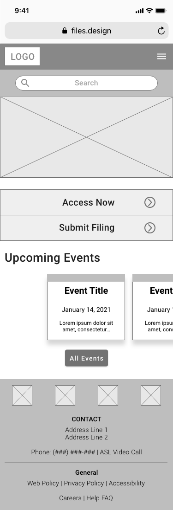
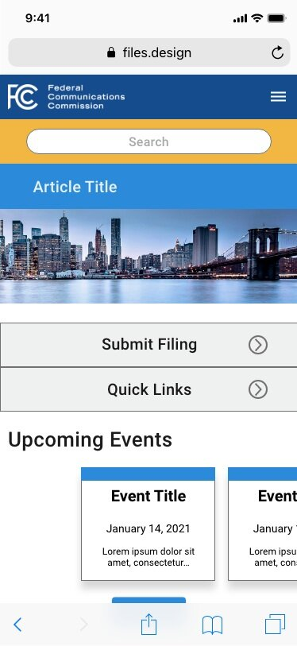

The FCC website as it looked at the end of 2020.
There are varying use cases for the FCC Website among various users. The majority of the site, however, assumes the user is familiar with the logistics and legalities of issues pertaining to communications in the United States. As such, I focused my research efforts on the use cases of experts.
I began by creating a proto-persona that would guide my design decisions moving forward. I
assumed my proto-persona would have been visiting the site regularly and frequently for job purposes. As
most of the action items on the homepage dealt with proceedings and legal work, I made my proto-persona was
a legal council. As such, his main goal would be to keep up to date on rules and regulations issued by the
FCC and be able to file necessary documents.
I assumed my persona, Sam, would have been working in
this industry for quite some time so I decided to age him up. I also made him partially color blind with
fading vision to remain conscious of how the FCC website addresses accessibility issues. A potential issue
someone at Sam’s age might experience is transitioning to newer modalities such as a smart phone.
While the site was usable, it contained a number of glaring issues that made for an overwhelming and cluttered experience.
User test feedback likewise pointed to a cluttered and overwhelming feeling. Which set me in my wireframing stages.
I created a navigation bar that unfolds in a sequential organization scheme to help users keep track of where they are.
After creating a style guide, I applied the design styles to my lo-fi wireframe to create a high fidelity mock-up.
I then proceeded to conduct user tests.
As the site includes highly complex forms and the action items would likely be more conducive to a desktop modality, use cases for the FCC site would likely be limited to checking status updates on proceedings or news & events.
Lo-Fi Wireframe
Hi-Fi Mock-up
Feedback:
It is likely that content and systems were simply added to the existing website which led to the overhwelming
experience. As communications and media technology continue to evolve, more content will need to be added into
the FCC website. Rather than building on the existing systems, it would be better if they were integrated within
the existing structure of the site. Furthermore, constant maintainence and iteration will help mitigate a a
cluttered experience for both experts and consumers.
As seen in user testing, the general public does not
seem to be fully aware of the FCC's initiatives nor responsibilities. Using language that is understandable to both
expoerts like Sam and general consumers could help the FCC gain trust with the general public.